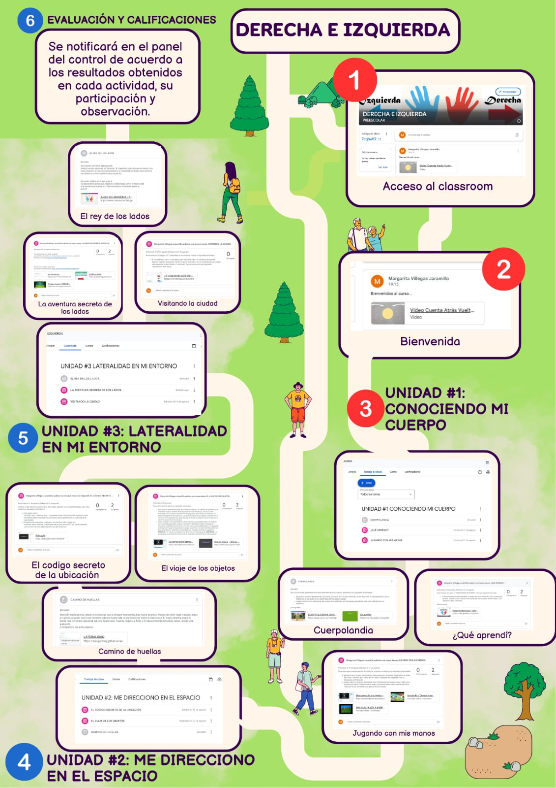

RED "DERECHA E IZQUIERDA"
PASOS PARA ACCEDER AL RED
2
Pulsa sobre las flechas o lupas activos de la imagen para ingresar y realiza las actividades que se plantean siguiente el orden numérico.
Te divertirás aprendiendo derecha e izquierda...
{"typeGame":"Mapa","instructions":"","showMinimize":false,"showActiveAreas":false,"author":"","url":"resources/WhatsApp_Image_2025-09-03_at_14.58.07.jpeg","authorImage":"","altImage":"","itinerary":{"showClue":false,"clueGame":"","percentageClue":40,"showCodeAccess":false,"codeAccess":"","messageCodeAccess":""},"points":[{"id":"p253280408593","title":"DERECHA E IZQUIERDA","type":8,"url":"","video":"","x":0.6157385019155649,"y":0.0999853374888596,"x1":0,"y1":0,"footer":"","author":"","alt":"","iVideo":0,"fVideo":0,"eText":"","iconType":12,"question":"","question_audio":"","toolTip":"","link":"https://classroom.google.com/c/NzgwMTgxOTc4MzE5?cjc=7cqhuff2","color":"#000000","fontSize":"14","map":{"id":"a253280408593","pts":[{"id":"p123253988955","title":"","type":0,"url":"","video":"","x":0,"y":0,"x1":0,"y1":0,"footer":"","author":"","alt":"","iVideo":0,"fVideo":0,"eText":"","iconType":0,"question":"","question_audio":"","toolTip":"","link":"","color":"#000000","fontSize":"14","map":{"id":"a123253988955","url":"","alt":"","author":"","pts":[]},"slides":[{"id":"s123253988955","title":"","url":"","author":"","alt":"","footer":""}],"activeSlide":0}],"url":"","alt":"","author":"","active":0},"slides":[{"id":"s253280408593","title":"","url":"","author":"","alt":"","footer":""}],"activeSlide":0,"audio":""},{"id":"p1651385581123","title":"BIENVENIDOS","type":8,"url":"","video":"","x":0.8877165238935869,"y":0.33299510178056735,"x1":0,"y1":0,"footer":"","author":"","alt":"","iVideo":0,"fVideo":0,"eText":"","iconType":13,"question":"","question_audio":"","toolTip":"","link":"https://classroom.google.com/c/NzgwMTgxOTc4MzE5/p/NzgwMzUzODc1MTU0/details","color":"#000000","fontSize":"14","map":{"id":"a1651385581123","pts":[{"id":"p799026960538","title":"","type":0,"url":"","video":"","x":0,"y":0,"x1":0,"y1":0,"footer":"","author":"","alt":"","iVideo":0,"fVideo":0,"eText":"","iconType":0,"question":"","question_audio":"","toolTip":"","link":"","color":"#000000","fontSize":"14","map":{"id":"a799026960538","url":"","alt":"","author":"","pts":[]},"slides":[{"id":"s799026960538","title":"","url":"","author":"","alt":"","footer":""}],"activeSlide":0}],"url":"","alt":"","author":"","active":0},"slides":[{"id":"s1651385581123","title":"","url":"","author":"","alt":"","footer":""}],"activeSlide":0,"audio":""},{"id":"p574998502082","title":"UNIDAD #1","type":8,"url":"","video":"","x":0.6322220183990814,"y":0.5291116362636529,"x1":0,"y1":0,"footer":"","author":"","alt":"","iVideo":0,"fVideo":0,"eText":"","iconType":12,"question":"","question_audio":"","toolTip":"","link":"https://classroom.google.com/u/0/w/NzgwMTgxOTc4MzE5/tc/NzgwMTgyMDQ2NjA4","color":"#000000","fontSize":"14","map":{"id":"a574998502082","pts":[{"id":"p999172048625","title":"","type":0,"url":"","video":"","x":0,"y":0,"x1":0,"y1":0,"footer":"","author":"","alt":"","iVideo":0,"fVideo":0,"eText":"","iconType":0,"question":"","question_audio":"","toolTip":"","link":"","color":"#000000","fontSize":"14","map":{"id":"a999172048625","url":"","alt":"","author":"","pts":[]},"slides":[{"id":"s999172048625","title":"","url":"","author":"","alt":"","footer":""}],"activeSlide":0}],"url":"","alt":"","author":"","active":0},"slides":[{"id":"s574998502082","title":"","url":"","author":"","alt":"","footer":""}],"activeSlide":0,"audio":""},{"id":"p1445075331142","title":"CUERPOLANDIA","type":8,"url":"","video":"","x":0.7091450953221583,"y":0.8067814206614078,"x1":0,"y1":0,"footer":"","author":"","alt":"","iVideo":0,"fVideo":0,"eText":"","iconType":0,"question":"","question_audio":"","toolTip":"","link":"https://classroom.google.com/c/NzgwMTgxOTc4MzE5/a/NzgwMTgxOTc4MzMx/details","color":"#000000","fontSize":"14","map":{"id":"a1445075331142","pts":[{"id":"p1076695431110","title":"","type":0,"url":"","video":"","x":0,"y":0,"x1":0,"y1":0,"footer":"","author":"","alt":"","iVideo":0,"fVideo":0,"eText":"","iconType":0,"question":"","question_audio":"","toolTip":"","link":"","color":"#000000","fontSize":"14","map":{"id":"a1076695431110","url":"","alt":"","author":"","pts":[]},"slides":[{"id":"s1076695431110","title":"","url":"","author":"","alt":"","footer":""}],"activeSlide":0}],"url":"","alt":"","author":"","active":0},"slides":[{"id":"s1445075331142","title":"","url":"","author":"","alt":"","footer":""}],"activeSlide":0,"audio":""},{"id":"p491106119030","title":"¿QUÉ APRENDÍ?","type":8,"url":"","video":"","x":0.9673868011642288,"y":0.8009562372003944,"x1":0,"y1":0,"footer":"","author":"","alt":"","iVideo":0,"fVideo":0,"eText":"","iconType":0,"question":"","question_audio":"","toolTip":"","link":"https://classroom.google.com/c/NzgwMTgxOTc4MzE5/a/NzgwMjc4MjI0NDc2/details","color":"#000000","fontSize":"14","map":{"id":"a491106119030","pts":[{"id":"p653739790172","title":"","type":0,"url":"","video":"","x":0,"y":0,"x1":0,"y1":0,"footer":"","author":"","alt":"","iVideo":0,"fVideo":0,"eText":"","iconType":0,"question":"","question_audio":"","toolTip":"","link":"","color":"#000000","fontSize":"14","map":{"id":"a653739790172","url":"","alt":"","author":"","pts":[]},"slides":[{"id":"s653739790172","title":"","url":"","author":"","alt":"","footer":""}],"activeSlide":0}],"url":"","alt":"","author":"","active":0},"slides":[{"id":"s491106119030","title":"","url":"","author":"","alt":"","footer":""}],"activeSlide":0,"audio":""},{"id":"p694967148312","title":"JUGANDO CON MIS MANOS","type":8,"url":"","video":"","x":0.8410131747906024,"y":0.9252280818605886,"x1":0,"y1":0,"footer":"","author":"","alt":"","iVideo":0,"fVideo":0,"eText":"","iconType":0,"question":"","question_audio":"","toolTip":"","link":"https://classroom.google.com/c/NzgwMTgxOTc4MzE5/a/NzgwMjg3Mzk2MTEw/details","color":"#000000","fontSize":"14","map":{"id":"a694967148312","pts":[{"id":"p1020402482792","title":"","type":0,"url":"","video":"","x":0,"y":0,"x1":0,"y1":0,"footer":"","author":"","alt":"","iVideo":0,"fVideo":0,"eText":"","iconType":0,"question":"","question_audio":"","toolTip":"","link":"","color":"#000000","fontSize":"14","map":{"id":"a1020402482792","url":"","alt":"","author":"","pts":[]},"slides":[{"id":"s1020402482792","title":"","url":"","author":"","alt":"","footer":""}],"activeSlide":0}],"url":"","alt":"","author":"","active":0},"slides":[{"id":"s694967148312","title":"","url":"","author":"","alt":"","footer":""}],"activeSlide":0,"audio":""},{"id":"p975431378852","title":"UNIDAD #2","type":8,"url":"","video":"","x":0.03606811984554752,"y":0.9485290231056583,"x1":0,"y1":0,"footer":"","author":"","alt":"","iVideo":0,"fVideo":0,"eText":"","iconType":74,"question":"","question_audio":"","toolTip":"","link":"https://classroom.google.com/u/0/w/NzgwMTgxOTc4MzE5/tc/NzgwMTgxOTc4MzI2","color":"#000000","fontSize":"14","map":{"id":"a975431378852","pts":[{"id":"p434998965075","title":"","type":0,"url":"","video":"","x":0,"y":0,"x1":0,"y1":0,"footer":"","author":"","alt":"","iVideo":0,"fVideo":0,"eText":"","iconType":0,"question":"","question_audio":"","toolTip":"","link":"","color":"#000000","fontSize":"14","map":{"id":"a434998965075","url":"","alt":"","author":"","pts":[]},"slides":[{"id":"s434998965075","title":"","url":"","author":"","alt":"","footer":""}],"activeSlide":0}],"url":"","alt":"","author":"","active":0},"slides":[{"id":"s975431378852","title":"","url":"","author":"","alt":"","footer":""}],"activeSlide":0,"audio":""},{"id":"p1255704537860","title":"CAMINO DE HUELLAS","type":8,"url":"","video":"","x":0.3767274605048882,"y":0.8164902177829186,"x1":0,"y1":0,"footer":"","author":"","alt":"","iVideo":0,"fVideo":0,"eText":"","iconType":60,"question":"","question_audio":"","toolTip":"","link":"https://classroom.google.com/c/NzgwMTgxOTc4MzE5/m/NzgwMjgxNzU3MDUw/details","color":"#000000","fontSize":"14","map":{"id":"a1255704537860","pts":[{"id":"p1301143198752","title":"","type":0,"url":"","video":"","x":0,"y":0,"x1":0,"y1":0,"footer":"","author":"","alt":"","iVideo":0,"fVideo":0,"eText":"","iconType":0,"question":"","question_audio":"","toolTip":"","link":"","color":"#000000","fontSize":"14","map":{"id":"a1301143198752","url":"","alt":"","author":"","pts":[]},"slides":[{"id":"s1301143198752","title":"","url":"","author":"","alt":"","footer":""}],"activeSlide":0}],"url":"","alt":"","author":"","active":0},"slides":[{"id":"s1255704537860","title":"","url":"","author":"","alt":"","footer":""}],"activeSlide":0,"audio":""},{"id":"p609355185543","title":"EL CÓDIGO SECRETO DE LA UBICACIÓN","type":8,"url":"","video":"","x":0.030573614351042024,"y":0.7504707410497573,"x1":0,"y1":0,"footer":"","author":"","alt":"","iVideo":0,"fVideo":0,"eText":"","iconType":60,"question":"","question_audio":"","toolTip":"","link":"https://classroom.google.com/c/NzgwMTgxOTc4MzE5/a/ODAxMDE2NTcyMDQw/details","color":"#000000","fontSize":"14","map":{"id":"a609355185543","pts":[{"id":"p1609547834693","title":"","type":0,"url":"","video":"","x":0,"y":0,"x1":0,"y1":0,"footer":"","author":"","alt":"","iVideo":0,"fVideo":0,"eText":"","iconType":0,"question":"","question_audio":"","toolTip":"","link":"","color":"#000000","fontSize":"14","map":{"id":"a1609547834693","url":"","alt":"","author":"","pts":[]},"slides":[{"id":"s1609547834693","title":"","url":"","author":"","alt":"","footer":""}],"activeSlide":0}],"url":"","alt":"","author":"","active":0},"slides":[{"id":"s609355185543","title":"","url":"","author":"","alt":"","footer":""}],"activeSlide":0,"audio":""},{"id":"p1470066765151","title":"EL VIAJE DE LOS OBJETOS","type":8,"url":"","video":"","x":0.4646395484169761,"y":0.734936760467233,"x1":0,"y1":0,"footer":"","author":"","alt":"","iVideo":0,"fVideo":0,"eText":"","iconType":60,"question":"","question_audio":"","toolTip":"","link":"https://classroom.google.com/c/NzgwMTgxOTc4MzE5/a/NzgwMjgyMTExNDE0/details","color":"#000000","fontSize":"14","map":{"id":"a1470066765151","pts":[{"id":"p669415913872","title":"","type":0,"url":"","video":"","x":0,"y":0,"x1":0,"y1":0,"footer":"","author":"","alt":"","iVideo":0,"fVideo":0,"eText":"","iconType":0,"question":"","question_audio":"","toolTip":"","link":"","color":"#000000","fontSize":"14","map":{"id":"a669415913872","url":"","alt":"","author":"","pts":[]},"slides":[{"id":"s669415913872","title":"","url":"","author":"","alt":"","footer":""}],"activeSlide":0}],"url":"","alt":"","author":"","active":0},"slides":[{"id":"s1470066765151","title":"","url":"","author":"","alt":"","footer":""}],"activeSlide":0,"audio":""},{"id":"p995440370883","title":"UNIDAD #3","type":8,"url":"","video":"","x":0.03332086709829477,"y":0.5349368789820995,"x1":0,"y1":0,"footer":"","author":"","alt":"","iVideo":0,"fVideo":0,"eText":"","iconType":75,"question":"","question_audio":"","toolTip":"","link":"https://classroom.google.com/u/0/w/NzgwMTgxOTc4MzE5/tc/NzgwMTgxOTc4MzI4","color":"#000000","fontSize":"14","map":{"id":"a995440370883","pts":[{"id":"p1287708109251","title":"","type":0,"url":"","video":"","x":0,"y":0,"x1":0,"y1":0,"footer":"","author":"","alt":"","iVideo":0,"fVideo":0,"eText":"","iconType":0,"question":"","question_audio":"","toolTip":"","link":"","color":"#000000","fontSize":"14","map":{"id":"a1287708109251","url":"","alt":"","author":"","pts":[]},"slides":[{"id":"s1287708109251","title":"","url":"","author":"","alt":"","footer":""}],"activeSlide":0}],"url":"","alt":"","author":"","active":0},"slides":[{"id":"s995440370883","title":"","url":"","author":"","alt":"","footer":""}],"activeSlide":0,"audio":""},{"id":"p773768350547","title":"LA AVENTURA SECRETA DE LOS LADOS","type":8,"url":"","video":"","x":0.030573614351042024,"y":0.3990145044419372,"x1":0,"y1":0,"footer":"","author":"","alt":"","iVideo":0,"fVideo":0,"eText":"","iconType":60,"question":"","question_audio":"","toolTip":"","link":"https://classroom.google.com/c/NzgwMTgxOTc4MzE5/a/NzgwMjg3NTUxNTg3/details","color":"#000000","fontSize":"14","map":{"id":"a773768350547","pts":[{"id":"p1031434650767","title":"","type":0,"url":"","video":"","x":0,"y":0,"x1":0,"y1":0,"footer":"","author":"","alt":"","iVideo":0,"fVideo":0,"eText":"","iconType":0,"question":"","question_audio":"","toolTip":"","link":"","color":"#000000","fontSize":"14","map":{"id":"a1031434650767","url":"","alt":"","author":"","pts":[]},"slides":[{"id":"s1031434650767","title":"","url":"","author":"","alt":"","footer":""}],"activeSlide":0}],"url":"","alt":"","author":"","active":0},"slides":[{"id":"s773768350547","title":"","url":"","author":"","alt":"","footer":""}],"activeSlide":0,"audio":""},{"id":"p1196895974082","title":"VISITANDO LA CIUDAD","type":8,"url":"","video":"","x":0.4399142736917014,"y":0.3931892395019531,"x1":0,"y1":0,"footer":"","author":"","alt":"","iVideo":0,"fVideo":0,"eText":"","iconType":60,"question":"","question_audio":"","toolTip":"","link":"https://classroom.google.com/c/NzgwMTgxOTc4MzE5/a/NzgwMTgyMzQzODI3/details","color":"#000000","fontSize":"14","map":{"id":"a1196895974082","pts":[{"id":"p84908873753","title":"","type":0,"url":"","video":"","x":0,"y":0,"x1":0,"y1":0,"footer":"","author":"","alt":"","iVideo":0,"fVideo":0,"eText":"","iconType":0,"question":"","question_audio":"","toolTip":"","link":"","color":"#000000","fontSize":"14","map":{"id":"a84908873753","url":"","alt":"","author":"","pts":[]},"slides":[{"id":"s84908873753","title":"","url":"","author":"","alt":"","footer":""}],"activeSlide":0}],"url":"","alt":"","author":"","active":0},"slides":[{"id":"s1196895974082","title":"","url":"","author":"","alt":"","footer":""}],"activeSlide":0,"audio":""},{"id":"p308490168715","title":"EL REY DE LOS LADOS","type":8,"url":"","video":"","x":0.313540647318075,"y":0.2572669168120449,"x1":0,"y1":0,"footer":"","author":"","alt":"","iVideo":0,"fVideo":0,"eText":"","iconType":60,"question":"","question_audio":"","toolTip":"","link":"https://classroom.google.com/c/NzgwMTgxOTc4MzE5/a/NzgwMTgxOTc4MzU2/details","color":"#000000","fontSize":"14","map":{"id":"a308490168715","pts":[{"id":"p728175590940","title":"","type":0,"url":"","video":"","x":0,"y":0,"x1":0,"y1":0,"footer":"","author":"","alt":"","iVideo":0,"fVideo":0,"eText":"","iconType":0,"question":"","question_audio":"","toolTip":"","link":"","color":"#000000","fontSize":"14","map":{"id":"a728175590940","url":"","alt":"","author":"","pts":[]},"slides":[{"id":"s728175590940","title":"","url":"","author":"","alt":"","footer":""}],"activeSlide":0}],"url":"","alt":"","author":"","active":0},"slides":[{"id":"s308490168715","title":"","url":"","author":"","alt":"","footer":""}],"activeSlide":0,"audio":""},{"id":"p827078469299","title":"EVALUACIÓN","type":8,"url":"","video":"","x":0.03606811984554752,"y":0.032024250215697055,"x1":0,"y1":0,"footer":"","author":"","alt":"","iVideo":0,"fVideo":0,"eText":"","iconType":78,"question":"","question_audio":"","toolTip":"","link":"https://classroom.google.com/c/NzgwMTgxOTc4MzE5?cjc=7cqhuff2","color":"#000000","fontSize":"14","map":{"id":"a827078469299","pts":[{"id":"p276848761914","title":"","type":0,"url":"","video":"","x":0,"y":0,"x1":0,"y1":0,"footer":"","author":"","alt":"","iVideo":0,"fVideo":0,"eText":"","iconType":0,"question":"","question_audio":"","toolTip":"","link":"","color":"#000000","fontSize":"14","map":{"id":"a276848761914","url":"","alt":"","author":"","pts":[]},"slides":[{"id":"s276848761914","title":"","url":"","author":"","alt":"","footer":""}],"activeSlide":0}],"url":"","alt":"","author":"","active":0},"slides":[{"id":"s827078469299","title":"","url":"","author":"","alt":"","footer":""}],"activeSlide":0,"audio":""}],"isScorm":0,"textButtonScorm":"Guardar la puntuación","repeatActivity":false,"textAfter":"","evaluation":0,"selectsGame":[{"typeSelect":0,"numberOptions":4,"quextion":"","options":["","","",""],"solution":"","solutionWord":"","percentageShow":35,"msgError":"","msgHit":""}],"isNavigable":true,"showSolution":true,"timeShowSolution":3,"version":2,"percentajeIdentify":100,"percentajeShowQ":100,"percentajeQuestions":100,"autoShow":false,"autoAudio":true,"optionsNumber":0,"evaluationF":false,"evaluationIDF":"","id":"2025932050300","order":"","msgs":{"msgSubmit":"Enviar","msgIndicateWord":"Proporcione una palabra o expresión","msgClue":"¡Genial! La pista es:","msgErrors":"Errores","msgHits":"Aciertos","msgScore":"Puntuación","msgMinimize":"Minimizar","msgMaximize":"Maximizar","msgFullScreen":"Pantalla Completa","msgNoImage":"Pregunta sin imágenes","msgSuccesses":"¡Correcto! | ¡Excelente! | ¡Genial! | ¡Muy bien! | ¡Perfecto!","msgFailures":"¡No era eso! | ¡Incorrecto! | ¡No es correcto! | ¡Lo sentimos! | ¡Error!","msgTryAgain":"Necesita al menos un %s% de respuestas correctas para conseguir la información. Vuelva a intentarlo.","msgEndGameScore":"Antes de guardar la puntuación comience la partida.","msgScoreScorm":"La puntuación no se puede guardar porque esta página no forma parte de un paquete SCORM.","msgPoint":"Punto","msgAnswer":"Responder","msgOnlySaveScore":"¡Sólo puede guardar la puntuación una vez!","msgOnlySave":"Sólo puede guardar una vez","msgInformation":"Información","msgYouScore":"Su puntuación","msgOnlySaveAuto":"Su puntuación se guardará después de cada pregunta. Sólo puede jugar una vez.","msgSaveAuto":"Su puntuación se guardará automáticamente después de cada pregunta.","msgSeveralScore":"Puede guardar la puntuación tantas veces como quiera","msgYouLastScore":"La última puntuación guardada es","msgActityComply":"Ya ha realizado esta actividad.","msgPlaySeveralTimes":"Puede realizar esta actividad cuantas veces quiera","msgClose":"Cerrar","msgPoints":"puntos","msgPointsA":"Puntos","msgQuestions":"Preguntas","msgAudio":"Audio","msgAccept":"Aceptar","msgYes":"Sí","msgNo":"No","msgShowAreas":"Mostrar áreas activas","msgShowTest":"Mostrar cuestionario","msgGoActivity":"Pulsa aquí para realizar esta actividad","msgSelectAnswers":"Selecciona las opciones correctas y pulsa sobre el botón 'Responder'.","msgCheksOptions":"Marca todas las opciones en el orden adecuado y pulsa sobre el botón 'Responder'.","msgWriteAnswer":"Escribe la palabra o expresión correcta y pulsa en el botón 'Responder'.","msgIdentify":"Identifica","msgSearch":"Buscar","msgClickOn":"Pulsa sobre","msgReviewContents":"Debes repasar el %s% de los contenidos de la actividad antes de completar el cuestionario.","msgScore10":"¡Todo perfecto! ¡Enhorabuena! ¿Deseas repetir esta actividad?","msgScore4":"No has superado esta prueba. Repasa sus contenidos e inténtalo de nuevo. ¿Deseas repetir la actividad?","msgScore6":"¡Estupendo! Has superado la prueba, pero seguro que lo puedes mejorar. ¿Deseas repetir esta actividad?","msgScore8":"¡Casi perfecto! Aún lo puedes hacer mejor. ¿Deseas repetir esta actividad?","msgNotCorrect":"¡No es correcto! Has pulsado sobre","msgNotCorrect1":"¡No es correcto! Has pulsado sobre","msgNotCorrect2":"y la respuesta correcta es","msgNotCorrect3":"¡Prueba otra vez!","msgAllVisited":"¡Genial! Has visitado los puntos necesarios.","msgCompleteTest":"Puedes completar el cuestionario.","msgPlayStart":"Pulse aquí para empezar","msgSubtitles":"Subtítulos","msgSelectSubtitles":"Selecciona un archivo de subtítulos. Formatos válidos:","msgNumQuestions":"Número de preguntas","msgHome":"Inicio","msgReturn":"Volver","msgCheck":"Comprobar","msgUncompletedActivity":"Actividad no completada","msgSuccessfulActivity":"Actividad superada. Puntuación: %s","msgUnsuccessfulActivity":"Actividad no superada. Puntuación: %s","msgTypeGame":"Mapa"}}
Su navegador no es compatible con esta herramienta.